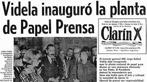
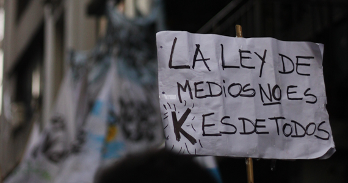

El Marco regulatorio de los medios como herramienta política
El análisis histórico demuestra que la regulación de la comunicación se reescribe con cada cambio de gobierno. El Derecho a la Información se transforma así en una variable ajustable a intereses económicos, políticos e ideológicos.
Por Paloma Laguens
La estabilidad de la democracia se asienta sobre ciertos pilares fundamentales, y uno de ellos es el Derecho a la Información. Sin embargo, en Argentina, la normativa que debería garantizar el pluralismo de voces se comporta como un termómetro político: cada cambio de gobierno trae consigo una fractura regulatoria que reajusta las reglas del juego. Cada nuevo período va modificando las regulaciones según sus intereses políticos, económicos e ideológicos. Esto nos obliga a preguntarnos: ¿cuán estables son estas regulaciones y cuánto se pone en juego la libertad si cada gobierno ajusta las normas a sus intereses?
La Prensa Escrita y el Papel de la Discordia
A nivel nacional, la prensa gráfica no tiene una ley que la regule. Si bien distintos gobiernos intentaron regularla sin éxito, las garantías constitucionales contra la censura previa han sido históricamente suficientes para determinar la responsabilidad posterior de los medios. No obstante, la regulación que toca a la prensa escrita es la Ley de Pasta Celulosa y Papel para Diario, sancionada en 2011 durante la presidencia de Cristina Fernández de Kirchner, de la mano de un gobierno que abiertamente buscaba combatir los monopolios mediáticos y saldar lo que consideraba "deudas históricas" de la democracia. El foco de esta disputa fue la empresa Papel Prensa S.A. y las negociaciones que involucraron a los diarios Clarín, La Nación y el Estado en la última dictadura militar.

Tapas del diario Clarín: a la izquierda, 24 de marzo de 1976, “total normalidad” ante el golpe de Estado. A la derecha: 28 de marzo de 1978, Videla inaugura Papel Prensa S.A. junto con Ernestina Herrera de Noble.
Pero, como suele suceder a lo largo de la historia, esta normativa no quedó fija. En 2018, bajo la presidencia de Mauricio Macri, se impulsó la reforma de dicha ley. Con el argumento de alentar la competencia y mejorar los precios, se derogaron los artículos que garantizaban la producción de papel para abastecer al mercado interno, y se impulsó la desregulación de la importación. Estas acciones impactaron de lleno en la declaración del papel como "interés público". El cambio de rumbo político e intereses económicos de un nuevo gobierno tuvo un impacto directo en el rol de los poderes mediáticos y, por ende, en el derecho a la información.
La Radiodifusión
La historia de la radiodifusión en Argentina es un claro ejemplo de la intervención estatal en los medios. En 1946, el presidente Juan D. Perón creó el Servicio Oficial de Radiodifusión (SOR), una herramienta para difundir las acciones de su gobierno, marcando una fuerte presencia estatal en el sector.
Esta regulación, por supuesto, no duró mucho. En 1953 se sancionó la Ley 14.241, que buscó abordar integralmente la radiodifusión. Pero la misma fue derogada apenas dos años después por la Revolución Libertadora. Mediante decreto, los medios en manos de empresarios afines al peronismo fueron transferidos a dueños cercanos al nuevo gobierno. Este episodio confirma cómo la regulación se transforma y se adapta a las necesidades de los gobiernos de turno.
El control se consolidó en 1972 con el decreto ley 19.798 del presidente Alejandro A. Lanusse, que creó el Comité Federal de Radiodifusión (COMFER). Este organismo, que era el encargado de administrar licencias, también vigilaba e inspeccionaba a las emisoras en todos sus aspectos, incluyendo el artístico y comercial, y tenía la potestad de aplicar sanciones. Esta estructura se formalizó aún más en 1980 con la Ley Nacional de Radiodifusión, la cual sería derogada recién en 2009 por la Ley de Servicios de Comunicación Audiovisual (Ley 26.522).
La Ley de Medios: El Gran Conflicto
El debate político más potente de las últimas décadas llegó de la mano de la Ley de Servicios de Comunicación Audiovisual, más conocida como la "ley de medios". Fue sancionada en 2009 durante la primera presidencia de Cristina Fernández de Kirchner. Esta ley no solo modificó una regulación heredada de la última dictadura militar, sino que proponía una mirada del acceso a la información desde la perspectiva del derecho humano a la comunicación, buscando la pluralidad de voces y el federalismo. El oficialismo de entonces tuvo un fuerte dominio de la agenda pública, creando un contexto social y político favorable para su aprobación.

Marchas a favor de la Ley de Medios en las afueras del Congreso de la Nación. Foto: Laura Salomé Canteros.
Pero esta regulación tampoco sobrevivió al cambio de gobierno. En 2015, la administración de Mauricio Macri la modificó. El Decreto 267/2015 reestructuró los medios y las telecomunicaciones, impactando en la pluralidad y la concentración de licencias.
Los cambios más notorios fueron: la creación del Ente Nacional de Comunicaciones (ENACOM), que absorbió y reemplazó a las antiguas autoridades de control (AFSCA y AFTIC); el otorgamiento de una mayoría automática al Poder Ejecutivo en el directorio del ENACOM; y la disolución de los Consejos Federales que representaban a universidades, sindicatos y provincias. Además, se permitió la compra y venta de licencias con fines de lucro, se eliminaron los límites a la cantidad de licencias por suscripción y se flexibilizó el número de licencias de radio y TV abierta, habilitando prórrogas sucesivas por diez años. Además, la TV por cable dejó de regirse por la Ley de Servicios de Comunicación Audiovisual, permitiendo a las operadoras de cable acumular más de 24 licencias.
El Cine y la Censura Recurrente
El cine, es un medio de comunicación con un rol histórico clave, actualmente goza de plena libertad de expresión, pero su pasado está marcado por la censura profunda impuesta principalmente por las sucesivas dictaduras.
El primer periodo de censura importante se dio en los años 60, con la creación del Consejo Nacional Honorario de Calificación Cinematográfica. Esta entidad tenía la facultad de ordenar cortes o prohibir películas por razones que "afecten a la moral pública, los bienes, costumbres o la seguridad nacional". El segundo periodo, y más grave, fue el de la década del 70, que se profundizó con el decreto-ley 18.019. Esta norma expresaba preocupaciónpor la influencia del cine en los jóvenes y dispuso un "grupo de entendidos" que decidía qué podía ver la ciudadanía.
Número de películas aprobadas y prohibidas bajo el Ente de Calificación Cinematográfica.
Con el regreso de la democracia bajo el gobierno de Raúl Alfonsín en 1983, la ley 18.019 fue derogada, y con ella desapareció el Ente de Calificación Cinematográfica. Las derogaciones se basaron en principios democráticos: libertad de expresión sin censura previa y defensa del pluralismo ideológico. Sin embargo, el financiamiento del sector sigue siendo un punto vulnerable: bajo la actual presidencia de Javier Milei, la Ley de Cine sufrió duras modificaciones que implican un fuerte desfinanciamiento, reflejando una postura de mínima participación estatal.
El Mundo Digital y la Propiedad Intelectual
La mayor parte de la información hoy se consume y difunde en internet, a través de redes sociales, portales y plataformas de streaming. En este contexto, la Ley Argentina Digital, sancionada en 2014, buscó declarar de interés público el desarrollo de las Tecnologías de la Información y Telecomunicaciones (TIC). El objetivo era garantizar la neutralidad de las redes, es decir, el derecho de cada ciudadano a acceder, enviar y recibir cualquier contenido sin restricciones.
Al igual que en otros sectores, esta ley fue modificada. En 2015, junto al cambio de gobierno y a través de un decreto, se crea el Ente Nacional de Comunicaciones (ENACOM), impactando directamente en la gestión de titularidades y licencias digitales.
Finalmente, en el mundo online, surge la pregunta ¿quienes producen la información y en qué lugar queda la propiedad intelectual?. La protección de los derechos de autor eninternet llega a nuestro país durante el segundo mandato de Carlos Menem (1996). En ese año se firmaron los "Tratados Internet" de la OMPI, buscando actualizar la legislación de propiedad intelectual ante la irrupción de las tecnologías digitales.
Estos tratados, el WCT (sobre Derecho de Autor) y el WPPT (sobre Interpretación o Ejecución y Fonogramas), buscan garantizar que los derechos de autores y productores sigan aplicándose efectivamente en la red, incluso creando nuevos derechos específicos. El objetivo es proteger la obra, pero también permitir flexibilidad a los países para establecer excepciones (por ejemplo, para usos educativos o de investigación). Adicionalmente, estos acuerdos exigen implementar protecciones tecnológicas (como el cifrado) para combatir la piratería.
Este marco legal digital complementa la Ley de Propiedad Intelectual en el mundo offline, que establece los derechos morales y económicos de los autores por un tiempo limitado. Su aplicación, a través del Registro Nacional de la Propiedad Intelectual, es fundamental para fiscalizar la titularidad en la prensa y asegurar un control posterior riguroso contra el fraude y la reproducción ilícita de contenido.
Las leyes cambian, los patrones se repiten
La historia nos demuestra que el derecho de medios en Argentina repite sistemáticamente un mismo patrón: las normas que rigen a los diferentes tipos de soportes de la información, no operan bajo un marco legal estable. La realidad es que son objetos de disputa e intereses políticos, económicos e ideológicos, los cuales se van modificando según las políticas de cada gobierno de turno. Desde la Ley de Radiodifusión de 1953, derogada por la Libertadora, hasta la Ley de Medios de 2009, desmantelada por el macrismo, y los recientes ajustes a la Ley de Cine, el hilo conductor del marco regulatorio termina siendo una herramienta estratégica para consolidar o desmantelar el poder real de algunos grupos de comunicación. Esta historización de fracturas regulatorias periódicas transforma el Derecho a la Información —un pilar fundamental de la democracia— en una variable dependiente de la agenda del Poder Ejecutivo, impidiendo la consolidación de un pluralismo genuino y dejando a la ciudadanía rehén de un debate mediático que se ajusta a la conveniencia del poder político y no a los derechos de la sociedad argentina.
Hoy nos encontramos frente a un ataque directo contra el periodismo por parte del gobierno nacional, principalmente a través del desprestigio del trabajo periodístico. Hay una legitimación de ese discurso desde sectores del poder político que colaboran con instalar en la opinión pública el famoso “no odiamos lo suficiente a los periodistas”. Sin dudas, este hecho impacta de manera directa contra el derecho a la información debilitando la democracia.
Bibliografía
Artiz Recalde. (2008). Análisis de la ley del servicio de radiodifusión 14.241. Facultad de Periodismo y Comunicación Social. Universidad Nacional de La Plata.
Enlace al documento
Becerra, M. (2012, 24 de febrero). Completo informe sobre Papel Prensa. Martín Becerra.
Enlace al documento
El Destape Web. (2020, 28 de agosto). Clarín cumple 75 años: Las diez tapas más vergonzosas de su historia.
Ver nota completa
Decreto 662/2024. Página web del Boletín Oficial de la República Argentina.
Boletín oficial
Decreto 984/2024. Página web del Boletín Oficial de la República Argentina.
Boletín oficial
Koci, D., & Nadalín, S. (2022). Lecciones de derecho de la información y ética periodística. CopyRap.
Koci, D., & Nadalín, S. (2023). Manual práctico derecho de la información y de la comunicación. Advocatus.
Loreti, D., de Charras, D., Lozano, L., & Baladrón, M. (Eds.). (2020). Futuro por pasado: Regresión de derechos en las políticas de comunicación del gobierno de Mauricio Macri. Teseo.